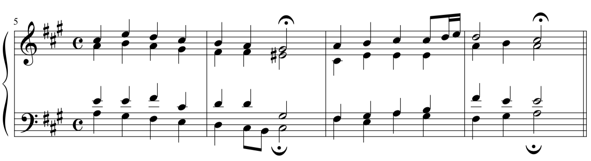

Secondary Functions 1
Molloy College – Sam Wells
Chromaticism and Altered Chords
Chromaticism: the use of pitches foreign to the key of a passage
so far we have only discussed chromaticism involving chromatic NCTs
We can describe chromaticism as nonessential or essential.
Nonessential Chromaticism: chromatic NCTs
Essential Chromaticism: the use of tones from outside the scale as members of chords.
Secondary Functions and Tonicization
Altered Chords: chords that use a tone from outside the key
Secondary Function: A chord whose function (i.e. Roman Numeral) belongs more closely to a key other than the main key of the passage
Altered chords are the most common sort of secondary functions
J. S. Bach, Chorale no. 106
Jesu Leiden, Pein un Tod

The last two chords of the previous example sound like V-I in the key of E
We still hear the E chord as a V, so we label it as such
That makes the B chord a V of V (V/V)
We can say that the B chord has tonicized the E chord.
Tonicization: to give special emphasis to a chord without changing the overall tonic of a passage
Secondary Dominant Chords
- Most secondary functions are either secondary dominants
- V of
- V7 of
- or secondary leading-tone chords
- vii° of
- vii°7 of
- viiø7 of
- As only a major and minor chord can be a tonic chord, we do not tonicize diminished chords
- No V/ii° or V/vii°
Spelling Secondary Dominants
There are three steps involved in spelling a secondary dominant
- Find the root of the chord that is to be tonicized
- Go up a P5.
- Using that note as the root, spell a MAJOR triad (for V of) or a MAJOR-MINOR seventh chord (V7 of)
Let's now determine all of the possible secondary dominants in a major and minor key
Recognizing Secondary Dominants
If you encounter an altered chord in a passage, there is a good chance that it will be a secondary dominant.
- Is the altered chord a major triad, or a major-minor seventh chord? If not, it is not a secondary dominant.
- Find the note a P5 below the root of the altered chord.
- Would a major of minor triad built on that note be a diatonic triad in this key? If so, the altered chord is a secondary dominant.
Secondary Dominants in Context
- Secondary Dominants generally resolve just as primary (normal) dominants do.
- That is, a V6/5 of V in C major resolves the same as a V6/5 in G major.
- The only exception is that sometimes the chord of resolution contains a seventh.
- In that case, the "leading-tone" can resolve down.
- Let's go through the Circle of Fifths with secondary dominants.
J. S. Bach, Chorale no. 106
Jesu Leiden, Pein un Tod
